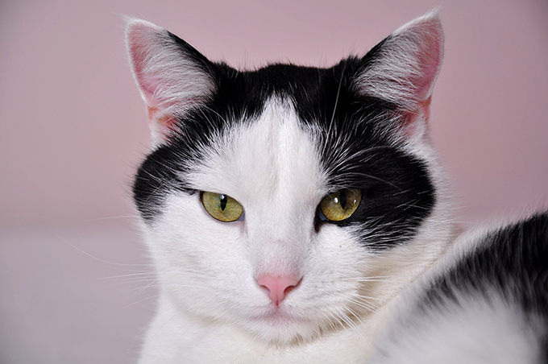

Cat evolution
The domestic cat is believed to have evolved from the Near Eastern wildcat, whose range covers vast portions of the Middle East westward to the Atlantic coast of Africa. Between 70,000 and 100,000 years ago the animal gave rise to the genetic lineage that eventually produced all domesticated cats, having diverged from the Near Eastern wildcat around 8,000 BC in the Middle East.
The felids are a rapidly evolving family of mammals that share a common ancestor only 10–15 million years ago and include lions, tigers, cougars and many others. Within this family, domestic cats (Felis catus) are part of the genus Felis, which is a group of small cats containing about seven species (depending upon classification scheme). Members of the genus are found worldwide and include the jungle cat (Felis chaus) of southeast Asia, European wildcat (F. silvestris silvestris), African wildcat (F. s. lybica), the Chinese mountain cat (F. bieti), and the Arabian sand cat (F. margarita), among others.
The domestic cat was first classified as Felis catus by Carl Linnaeus in the 10th edition of his Systema Naturae published in 1758. Because of modern phylogenetics, domestic cats are usually regarded as another subspecies of the wildcat, F. silvestris. This has resulted in mixed usage of the terms, as the domestic cat can be called by its subspecies name, Felis silvestris catus. Wildcats have also been referred to as various subspecies of F. catus, but in 2003, the International Commission on Zoological Nomenclature fixed the name for wildcats as F. silvestris. The most common name in use for the domestic cat remains F. catus, following a convention for domesticated animals of using the earliest (the senior) synonym proposed.[ Sometimes, the domestic cat has been called Felis domesticus or Felis domestica, as proposed by German naturalist J. C. P. Erxleben in 1777, but these are not valid taxonomic names and have been used only rarely in scientific literature,[ because Linnaeus's binomial takes precedence. A population of Transcaucasian black feral cats was once classified as Felis daemon (Satunin 1904) but now this population is considered to be a part of domestic cat.
All the cats in this genus share a common ancestor that is believed to have lived around 6–7 million years ago in the Near East (the Middle East). The exact relationships within the Felidae are close but still uncertain, e.g. the Chinese mountain cat is sometimes classified (under the name Felis silvestris bieti) as a subspecies of the wildcat, like the North African variety F. s. lybica.
In comparison to dogs, cats have not undergone major changes during the domestication process, as the form and behavior of the domestic cat is not radically different from those of wildcats and domestic cats are perfectly capable of surviving in the wild. Fully domesticated house cats often interbreed with feral F. catus populations, producing hybrids such as the Kellas cat. This limited evolution during domestication means that hybridisation can occur with many other felids, notably the Asian leopard cat. Several natural behaviors and characteristics of wildcats may have predisposed them for domestication as pets. These traits include their small size, social nature, obvious body language, love of play and relatively high intelligence.:12–17 Several small felid species may have an inborn tendency towards tameness.
Cats have either a mutualistic or commensal relationship with humans. Two main theories are given about how cats were domesticated. In one, people deliberately tamed cats in a process of artificial selection as they were useful predators of vermin. This has been criticized as implausible, because the reward for such an effort may have been too little; cats generally do not carry out commands and although they do eat rodents, other species such as ferrets or terriers may be better at controlling these pests. The alternative idea is that cats were simply tolerated by people and gradually diverged from their wild relatives through natural selection, as they adapted to hunting the vermin found around humans in towns and villages.
Poisoning
In addition to obvious dangers such as rodenticides, insecticides, and herbicides, cats may be poisoned by many chemicals usually considered safe by their human guardians, because their livers are less effective at some forms of detoxification than those of many other animals, including humans and dogs. Some of the most common causes of poisoning in cats are antifreeze and rodent baits. Cats may be particularly sensitive to environmental pollutants. When a cat has a sudden or prolonged serious illness without any obvious cause, it has possibly been exposed to a toxin. Many human medicines should never be given to cats. For example, the painkiller paracetamol (or acetaminophen, sold as Tylenol and Panadol) is extremely toxic to cats: even very small doses need immediate treatment and can be fatal. Even aspirin, which is sometimes used to treat arthritis in cats, is much more toxic to them than to humans and must be administered cautiously. Similarly, application of minoxidil (Rogaine) to the skin of cats, either accidentally or by well-meaning guardians attempting to counter loss of fur, has sometimes been fatal. Essential oils can be toxic to cats and cases have been reported of serious illnesses caused by tea tree oil, including flea treatments and shampoos containing it.